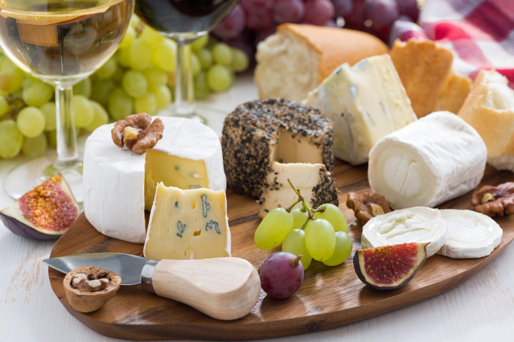
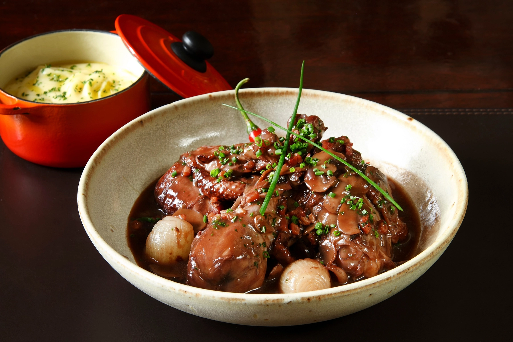
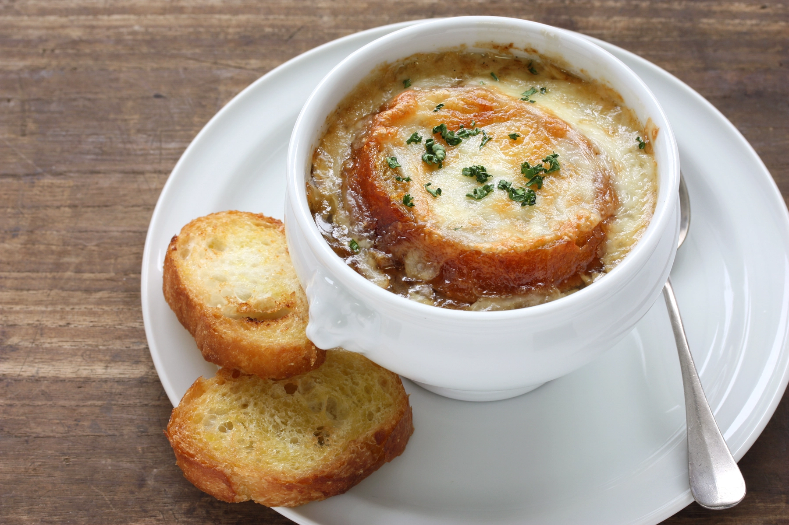
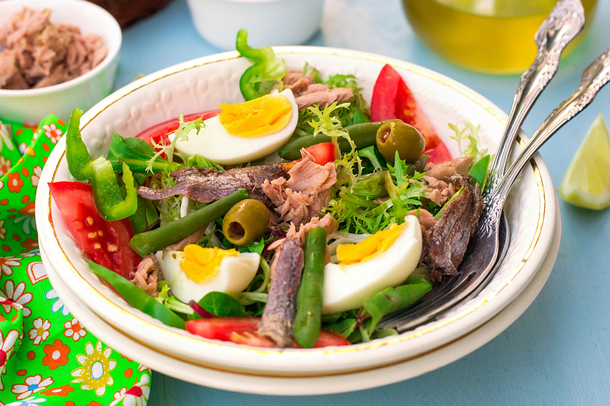
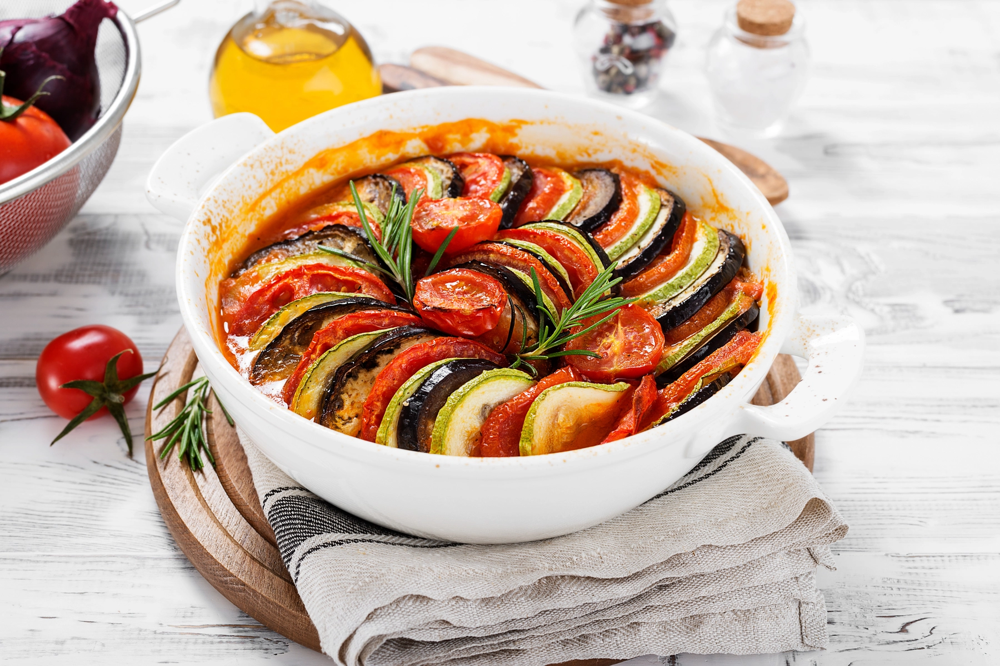

Le Menu
Cheese and Wine
5
The classic way to start a meal, highly suggested, paired with a seasonal wine.
Coq Au Vin
15
Chicken braised with Burgundy wine, lardons, mushrooms, and garlic.
French Onion Soup
3
An admixture of red wine and beef broth, covered in gruyere cheese.
Salade Niçoise
3
A salad of tomatos, hard-boiled eggs, olives, and anchovies.
Ratatouille
5
A casserole of seasonal vegetables, with onions for taste.
Boeuf Bourguignon

16
Beef stew braised in red wine, flavored with carrots and onions.